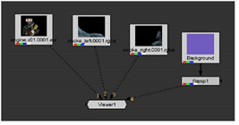
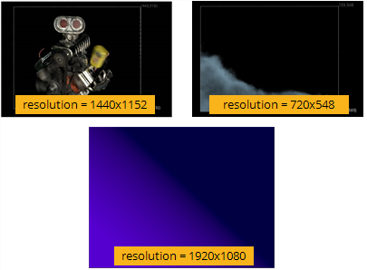

要查看多个输入:
| 1。 | 选择的读取节点 Smoke_left 剪辑，然后按 2 在键盘顶部或数字键盘上。 |
这将从选定节点创建与查看器的第二个连接。当光标在查看器上时，您可以按键盘上的数字来选择要查看的连接。
| 2. | 将鼠标指针移动到查看器上并按 1 要显示 发动机.v01 剪辑。新闻 2 显示的结果 Smoke_left 节点。 |
通过这种方式，您可以将多个图像连接到同一查看器，然后在图像之间切换。
| 3. | 选择其他每个节点，然后按一个数字以建立与查看器的连接。 |

| 4. | 将鼠标指针移动到查看器上，然后按键盘上的数字以显示每个连接的节点。 |
当您在不同视图之间切换时，图像可能看起来大小相同。然而，如果你看观察者的右下角，你会看到图像有不同的分辨率。
|
 |
|
这些图像有不同的分辨率。 |
Nuke 允许在一个组合中使用多个分辨率，但您需要使这些图像符合项目分辨率。这允许元素在复合材料中正确对齐。
|
|